2. Dibuixa una flor¶
{kind=link}
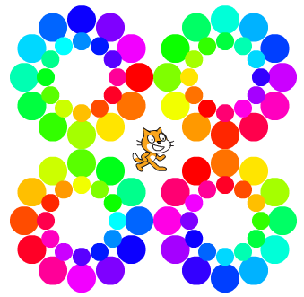
En aquesta pràctica programarem una sèrie de funcions que atrauen diversos tipus de flors a la pantalla.
; BR |
Comencem el | Editor_de_scratch |.
; BR |
Creem una nova funció anomenada ** casa **.
Primer fem clic al botó més blocs
; Mas-Blques |
A continuació, feu clic a Creació d’un bloc | Create-Bocate |
A continuació, canviem el nom del nou bloc a ** start **

Finalment, premeu el botó ** ok **
; BR |
Programem l’inici amb els blocs següents.
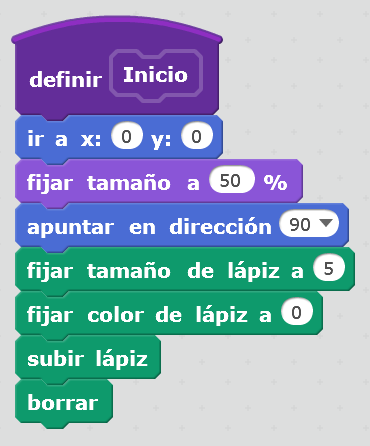
Aquest programa col·loca el gat al centre de la pantalla, prepara el llapis i esborra qualsevol dibuix anterior.
; BR |
Crearem una nova funció anomenada ** punt **.
Primer fem clic al botó més blocs
; Mas-Blques |
A continuació, feu clic a Creació d’un bloc | Create-Bocate |
A continuació, canviem el nom del nou bloc a ** punt **
Ara afegirem la variable ** ràdio **.
A les opcions, afegim una entrada numèrica
; Entrada-numèrica |
Anomenarem la nova entrada ** Ràdio **
Finalment, premeu el botó ** ok **
; BR |
Ara programarem la funció que dibuixa un punt a la pantalla (llapis inferior i pujada del bolígraf).
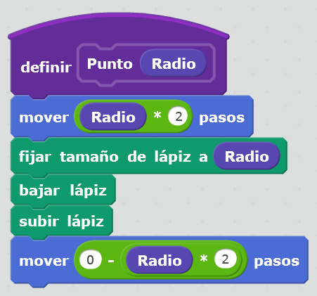
Aquest programa traurà un punt de mida que dependrà de la variable de ràdio. Si el radi és molt gran, el punt serà molt gran i si el valor de la ràdio és petit, el punt dibuixat serà petit.
; BR |
A continuació, crearem un petit programa de prova per comprovar que el punt es dibuixa a la pantalla.
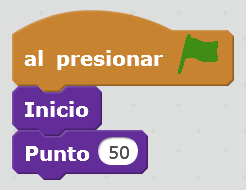
En executar el programa, prement la bandera verda | Flag-Verde |, apareixerà el següent dibuix a la pantalla.
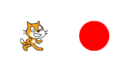
El gat ha dibuixat un punt de 50 a una distància de 100 passos
Una vegada que tot funcioni bé, esborrarem el programa de proves.
; BR |
Ara que podem dibuixar punts, programarem el dibuix d’una flor.
Primer crearem una nova funció anomenada ** Flor **.
Primer fem clic al botó més blocs
; Mas-Blques |
A continuació, feu clic a Creació d’un bloc | Create-Bocate |
A continuació, canviem el nom del nou bloc A ** Flor **
Ara afegirem la variable ** mida **.
A les opcions, afegim una entrada numèrica
; Entrada-numèrica |
Anomenarem la nova entrada ** mida **
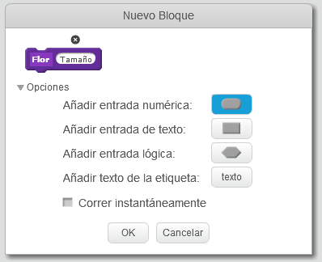
Finalment, premeu el botó ** ok **
; BR |
A continuació, programarem la funció que una flor dibuixarà a la pantalla.
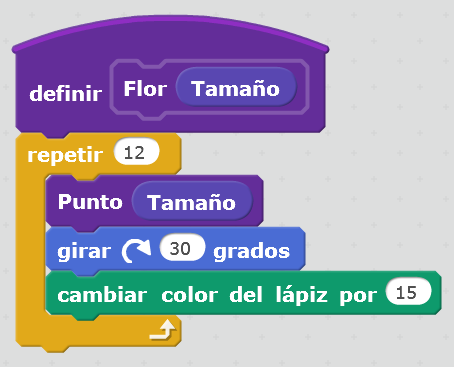
; BR |
Per demostrar que la funció està ben escrita, crearem un petit programa de proves que dibuixi la flor a la pantalla.
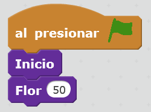
Després de prémer la bandera verda | Flag-Verde |, a la pantalla una flor feta amb punts de colors al voltant del gat apareixerà com es mostra la imatge següent.
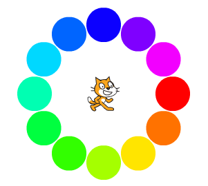
Una vegada que tot funcioni bé, esborrarem el programa de proves.
; BR |
Finalment, jugarem amb la funció Flower per aparèixer als dibuixos de la pantalla formats per flors de diferents mides.
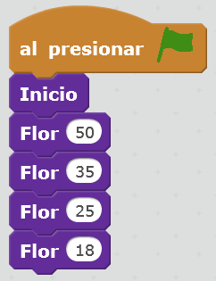
El programa anterior dibuixa una imatge formada per diversos anells de colors al voltant del gat.
Premeu a la bandera verda | Flag-Verde | Per veure el resultat.
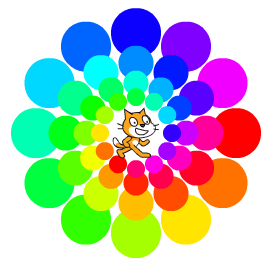
Una vegada que tot funcioni bé, esborrarem el programa de proves.
; BR |
Amb el programa següent, es dibuixaran diverses flors en diferents punts de la pantalla. Al final, el gat estarà al mig.
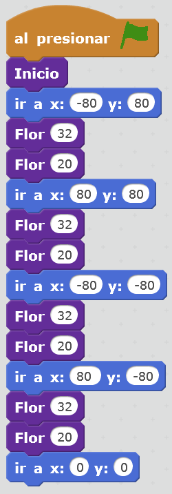
Premeu a la bandera verda | Flag-Verde | Per veure el resultat.
{kind=link}
{kind=link}
{kind=link}
{kind=link}
{kind=link}
{kind=link}
{kind=link}
Exercicis¶
- Modifiqueu el programa de manera que tots els punts de la funció de la flor tinguin el mateix color. Dibuixa una flor composta per anells vermells grans a l’exterior i anells petits i verds a l’interior.
- Feu un programa que dibuixi cinc anells situats com a logotip dels Jocs Olímpics.